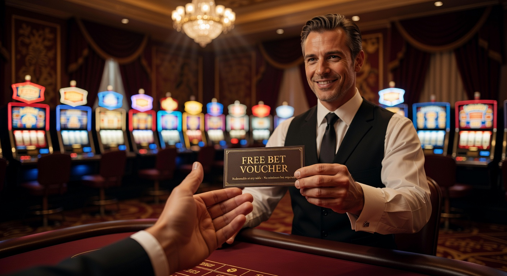
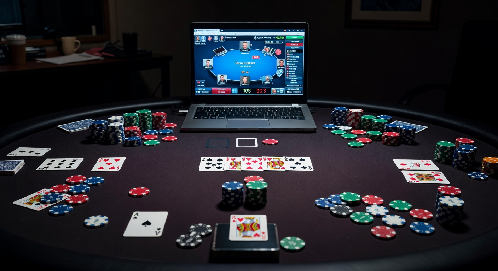

Guida Completa ai Migliori Casino Senza Deposito Stranieri del 2026
Il panorama del gioco d'azzardo digitale ha subito una trasformazione radicale nel corso dell'ultimo anno. Entrati nel 2026, i giocatori italiani mostrano un interesse sempre crescente per il casino senza deposito stranieri, una tipologia di piattaforma che combina innovazione tecnologica, cataloghi di giochi immensi e promozioni che le strutture locali faticano a pareggiare. Questi siti, operanti con licenze internazionali prestigiose, offrono un'esperienza di gioco che va oltre i confini nazionali, garantendo al contempo standard di sicurezza elevatissimi grazie all'uso della blockchain e dell'intelligenza artificiale per la protezione dei dati.
Scegliere un casino senza deposito stranieri oggi significa accedere a un mercato globale. Molti utenti cercano soluzioni alternative per testare nuovi software senza dover necessariamente impegnare il proprio capitale iniziale. Questa esigenza ha spinto gli operatori esteri a creare pacchetti di ingresso estremamente competitivi. Spesso, trovare un ottimo bonus casino senza deposito stranieri è diventato più facile grazie alla maggiore concorrenza tra i brand globali che puntano ad acquisire fette di mercato in Europa.
In questo articolo esploreremo dettagliatamente come funzionano queste piattaforme, quali sono i criteri per identificare i migliori casino online stranieri e come sfruttare al meglio le promozioni attive nel 2026. Analizzeremo gli aspetti legali, le licenze di Curacao e Malta, e vedremo perché molti utenti preferiscono consultare una lista casino stranieri aggiornata prima di aprire un nuovo conto di gioco. La tecnologia nel 2026 permette pagamenti istantanei e sessioni in realtà aumentata, rendendo il gioco estero più immersivo che mai.
Free spin senza deposito immediato
Nel 2026, il concetto di giri gratuiti si è evoluto drasticamente. I casino online stranieri hanno smesso di offrire semplici bonus vincolati a requisiti di scommessa impossibili, passando a modelli molto più trasparenti. I giri gratis offerti oggi spesso non prevedono alcun versamento e permettono di esplorare le ultime slot machine rilasciate dai giganti del settore come NetEnt, Pragmatic Play e le emergenti software house basate su Web3. Questi omaggi sono il cuore pulsante del casino senza deposito stranieri moderno.
I vantaggi di utilizzare questi giri gratuiti sono molteplici. In primo luogo, permettono di valutare la fluidità della piattaforma su dispositivi mobile. Nel 2026, oltre l'85% delle sessioni di gioco avviene tramite smartphone o visori VR leggeri. Un casino senza deposito stranieri che offre un pacchetto di benvenuto generoso dimostra solidità finanziaria e fiducia nel proprio prodotto. Molte di queste promozioni sono erogate sotto forma di codice bonus o attivazione automatica al termine della verifica dell'identità, un processo che oggi richiede pochi secondi grazie ai sistemi di scansione biometrica.
Le slot machine che supportano i giri gratis nel 2026 includono meccaniche innovative come il "Quantum Reels" e il "Social Multiplayer", dove i giri vinti possono essere condivisi con una community di amici all'interno della piattaforma. Questo aspetto social è diventato fondamentale nei casino online esteri, poiché riduce l'isolamento del giocatore e trasforma il gambling in un'attività di intrattenimento condivisa. La trasparenza è garantita da algoritmi Provably Fair, consultabili in tempo reale da chiunque utilizzi un casino senza deposito stranieri.
Per chi è alla ricerca della massima convenienza, la lista casino stranieri del 2026 evidenzia operatori che offrono fino a 200 giri senza alcuna ricarica. È importante però leggere sempre i termini e le condizioni. Anche se si tratta di bonus senza deposito, esistono spesso dei limiti di prelievo massimo sulle vincite ottenute. Tuttavia, considerando che non si sta rischiando denaro proprio, l'opportunità rimane tra le più ghiotte per chi ama i casino stranieri che accettano italiani e desidera testare la fortuna senza pensieri.
Ecco una tabella comparativa dei migliori operatori per slot stranieri del 2026:
| Operatore | Giri Gratis | Requisito di Puntata | Licenza |
|---|---|---|---|
| Global Reels 2026 | 100 Giri | 25x | Curacao eGaming |
| CryptoBet International | 50 Giri | 0x (Wager Free) | Malta MGA |
| EuroSlots Elite | 150 Giri | 35x | Gibraltar |
| Web3 Casino Pro | 200 Giri | 30x | Anjouan |
Come massimizzare i giri gratuiti
Per sfruttare al meglio un casino senza deposito stranieri, è consigliabile puntare su giochi con un alto RTP (Return to Player). Nel 2026, la media del mercato internazionale si è alzata, con molti titoli che sfiorano il 98%. Utilizzare i giri gratuiti su queste macchine aumenta statisticamente le probabilità di convertire il bonus in saldo reale prelevabile. Inoltre, monitorare i tornei interni ai casino online stranieri può portare a vincite supplementari senza costi aggiuntivi.
Un altro aspetto da non sottovalutare è la scadenza dei bonus. Molti casino senza deposito stranieri richiedono l'utilizzo dei giri entro 24 o 48 ore dall'attivazione. La gestione del tempo è cruciale per non sprecare le opportunità offerte dai migliori casino online stranieri. La tecnologia dei moderni metodi di pagamento basati su stablecoin permette poi di incassare le eventuali vincite in pochi istanti, eliminando le lunghe attese burocratiche del passato.
Infine, la registrazione tramite sistemi veloci è un trend consolidato. Molti utenti scelgono il casino registrazione spid o metodi equivalenti europei per accelerare le pratiche, anche se nei portali internazionali il sistema "Pay N Play" tramite Trustly o i wallet crittografici rimane il più diffuso per accedere immediatamente al casino senza deposito stranieri.
Freebet

Oltre alle slot, il mondo del casino senza deposito stranieri include sezioni dedicate alle scommesse sportive di altissimo livello. Le "Freebet" o scommesse gratuite sono lo strumento preferito dai bookmaker internazionali per attirare scommettitori esperti. Nel 2026, le scommesse non riguardano più solo il calcio o il tennis tradizionale, ma si sono espanse massicciamente verso gli eSports VR e le simulazioni gestite da algoritmi di intelligenza artificiale, offrendo mercati attivi 24 ore su 24.
Il funzionamento è semplice: un casino senza deposito stranieri accredita sul conto dell'utente una somma simbolica (solitamente tra i 5 e i 20 euro) da utilizzare su un evento specifico o su una multipla. In caso di vittoria, il giocatore riceve il profitto netto sotto forma di bonus o, in alcuni casi rari, di saldo reale. Questo tipo di bonus di benvenuto sportivo è ideale per chi vuole testare le quote di un operatore non aams, che solitamente sono più alte rispetto alla media nazionale a causa di una tassazione più favorevole nel paese di licenza.
Le piattaforme estere brillano per la profondità dei mercati. Esplorando i casino online europei, si nota come le freebet possano essere giocate su eventi di nicchia, come il campionato di cricket indiano o le leghe minori di basket sudamericano, spesso coperte da streaming in alta definizione direttamente sul sito. Il casino senza deposito stranieri diventa quindi un hub di intrattenimento completo, dove la scommessa gratuita funge da biglietto d'ingresso per un'esperienza visiva e interattiva superiore.
Nel 2026, l'integrazione dei dati in tempo reale è impressionante. Quando utilizzi una freebet in un casino online esteri, puoi visualizzare statistiche avanzate predittive che ti aiutano a piazzare la giocata. Queste funzionalità sono spesso incluse gratuitamente per chi usufruisce del bonus senza ricarica, offrendo un valore aggiunto che va oltre il semplice valore monetario. La competizione tra i migliori casino online stranieri ha portato a una qualità del servizio clienti multilingue, disponibile via chat 24/7 per risolvere dubbi sulle scommesse gratuite.
- Maggiore Flessibilità: Le freebet nei siti stranieri non hanno limiti stringenti sulle quote minime.
- Eventi Globali: Accesso a mercati mondiali non sempre disponibili sui circuiti locali.
- Innovazione: Possibilità di scommettere su eventi politici, premi cinematografici e meteo.
- Cash Out: Spesso disponibile anche sulle scommesse piazzate con fondi bonus nel 2026.
Chi cerca una lista casino stranieri affidabile per le freebet dovrebbe prestare attenzione alla reputazione dell'operatore su forum internazionali e siti di recensioni indipendenti. La sicurezza è fondamentale: un casino senza deposito stranieri degno di nota deve possedere protocolli di crittografia TLS 1.3 o superiori per proteggere ogni singola transazione. Nel 2026, la trasparenza è il requisito minimo per sopravvivere in un mercato così vasto e competitivo.
I metodi di pagamento associati a questi siti sono vari e moderni. Non parliamo solo di carte di credito, ma di sistemi di pagamento istantaneo che permettono di prelevare le vincite derivanti dalle freebet in meno di 10 minuti. Questo livello di efficienza è ciò che spinge sempre più italiani verso il casino senza deposito stranieri, dove la burocrazia è ridotta all'osso e il focus è tutto sul divertimento e sulla rapidità d'esecuzione.
Bonus senza deposito immediato poker

Il poker online ha vissuto una seconda giovinezza nel 2026. Grazie all'introduzione di tavoli basati su realtà virtuale e all'eliminazione dei bot tramite sofisticati controlli neurali, il casino senza deposito stranieri dedicato al poker è diventato un punto di riferimento per i pro e per gli amatori. I bonus immediati per il poker permettono di sedersi ai tavoli "Cash Game" o iscriversi a tornei "Sit & Go" senza aver versato un centesimo, offrendo la possibilità di costruire un bankroll partendo da zero.
Questi bonus di benvenuto specifici per il poker sono spesso strutturati in ticket gratuiti o somme di denaro bonus che si sbloccano man mano che si produce "rake". Tuttavia, nel 2026, molti casino online stranieri offrono bonus puramente gratuiti per incentivare il traffico nei nuovi formati di gioco, come il Poker a 3 carte VR o i tornei ultra-rapidi con jackpot progressivo. Partecipare a questi giochi tramite un casino senza deposito stranieri significa confrontarsi con una player base globale, migliorando le proprie abilità contro stili di gioco provenienti da ogni continente.
L'esperienza di gioco nel poker straniero è caratterizzata da una liquidità condivisa che i mercati chiusi non possono offrire. Quando si accede a un casino online esteri, il montepremi dei tornei è garantito da migliaia di iscritti simultanei, rendendo i premi finali estremamente appetibili anche per chi gioca con un bonus senza deposito. La varietà di varianti disponibili, dal classico Texas Hold'em al meno comune Omaha Hi-Lo, assicura che ogni appassionato trovi il tavolo adatto ai propri gusti.
Un elemento distintivo dei migliori casino online stranieri per il poker nel 2026 è l'integrazione di software di assistenza al gioco (HUD) direttamente nell'interfaccia del sito, livellando il campo di gioco tra esperti e principianti. Utilizzare un bonus di ingresso in questo contesto permette di testare tali strumenti senza rischi. Inoltre, i metodi di pagamento cripto-nativi consentono di partecipare a tavoli "High Stakes" con la massima privacy e velocità, caratteristiche molto apprezzate nella community del poker internazionale.
Molti giocatori consultano regolarmente la lista casino stranieri per verificare quali poker room offrano i migliori "freeroll" giornalieri. I freeroll sono tornei gratuiti con premi in denaro reale, e sono la forma più pura di casino senza deposito stranieri per gli amanti delle carte. Spesso, questi tornei sono riservati ai nuovi iscritti, garantendo un field meno agguerrito e maggiori possibilità di successo. La crescita del settore dei casino stranieri che accettano italiani ha fatto sì che molte di queste piattaforme offrano ora assistenza e software interamente tradotti in lingua italiana per il 2026.
Secondo un recente studio sull'industria del gambling (scopri di più sul gioco online), il poker rimane uno dei segmenti con la crescita più organica, trainato proprio dalle promozioni senza deposito che abbassano la barriera d'ingresso per i nuovi talenti. Il casino senza deposito stranieri agisce quindi come una scuola di formazione, dove è possibile imparare le strategie fondamentali senza subire perdite economiche iniziali.
Per chi è interessato ai dettagli tecnici e alla sicurezza, è utile sapere che le poker room internazionali più affidabili nel 2026 utilizzano la tecnologia blockchain per garantire che il mazzo sia mescolato in modo equo e non manipolabile. Questo livello di certificazione è un pilastro fondamentale di ogni casino online stranieri che voglia mantenere una licenza operativa prestigiosa nel 2026.
Conclusione
In definitiva, il casino senza deposito stranieri rappresenta nel 2026 la frontiera più avanzata del gaming online. Queste piattaforme non offrono solo l'opportunità di vincere premi senza investimenti, ma propongono un modello di intrattenimento tecnologicamente all'avanguardia, sicuro e profondamente orientato all'utente. Che si tratti di giri gratis sulle slot di ultima generazione, di freebet per gli appassionati di sport o di bonus per il poker, l'offerta è vasta e diversificata.
La chiave per navigare con successo in questo mercato è l'informazione. Affidarsi a una lista casino stranieri curata e aggiornata permette di evitare siti poco seri e di concentrarsi solo su quelli che garantiscono pagamenti puntuali e giochi certificati. I casino online stranieri hanno dimostrato di saper innovare più velocemente, adottando per primi metodi di pagamento decentralizzati e soluzioni di gioco in realtà virtuale che ora, nel 2026, sono diventate lo standard del settore.
Ricordate sempre che il gioco deve rimanere un piacere. Anche se si utilizzano bonus in un casino senza deposito stranieri, è fondamentale approcciarsi con responsabilità. Le piattaforme estere più serie offrono strumenti avanzati di auto-limitazione e monitoraggio del comportamento di gioco, garantendo un ambiente protetto per tutti. Sfruttare un bonus di benvenuto o i giri gratuiti è un ottimo modo per divertirsi, ma la consapevolezza rimane la scommessa più importante da vincere.
Il futuro del settore sembra indirizzato verso una personalizzazione sempre maggiore, con bonus creati su misura dagli algoritmi basandosi sulle preferenze reali del giocatore. I migliori casino online stranieri stanno già testando sistemi dove la fedeltà viene premiata istantaneamente, trasformando ogni puntata in un'esperienza unica. Se state cercando un nuovo modo di vivere il casinò, esplorare i casino stranieri che accettano italiani potrebbe essere la scelta giusta per questo 2026 ricco di novità.
Approfondimenti sulla Sicurezza e Regolamentazione
Mentre i casino online esteri offrono grandi opportunità, la sicurezza rimane il punto cardine. Nel 2026, le licenze di Curacao, Malta (MGA) e della Kahnawake Gaming Commission hanno introdotto standard ancora più rigorosi per la protezione del giocatore. Un casino senza deposito stranieri affidabile deve mostrare chiaramente il proprio numero di licenza e i sigilli di enti terzi come eCOGRA o iTech Labs, che certificano l'integrità del software RNG (Random Number Generator).
Inoltre, l'adozione delle tecnologie Web3 ha permesso la nascita dei "Casino Decentralizzati". In queste strutture, i metodi di pagamento non passano attraverso banche centrali, ma avvengono direttamente tra il wallet del giocatore e lo smart contract del casino. Questo elimina qualsiasi dubbio sulla solvibilità dell'operatore, poiché i fondi per le vincite sono bloccati sulla blockchain e distribuiti automaticamente. È un'evoluzione che rende il casino senza deposito stranieri ancora più trasparente e appetibile per l'utente moderno del 2026.
Per restare sempre aggiornati sulle dinamiche legali e tecnologiche del gioco d'azzardo globale, è utile consultare pubblicazioni di settore autorevoli come Forbes, che analizzano come la tecnologia stia cambiando il business del gambling, o monitorare i report della BBC sulle nuove regolamentazioni internazionali previste per la fine del 2026.
Ecco un riepilogo finale dei punti di forza dei casino online stranieri:
- Varietà di Bonus: Più opzioni di bonus senza deposito rispetto ai competitor locali.
- Tecnologia Avanzata: Supporto completo per VR, AR e pagamenti in criptovalute.
- Limiti più Alti: Possibilità di giocare e prelevare somme più ingenti, ideali per gli high roller.
- Privacy: Procedure di verifica rapide e protezione dei dati migliorata tramite blockchain.
- Accessibilità: Piattaforme ottimizzate per ogni dispositivo, garantendo un'ottima esperienza di gioco ovunque.
Scegliere il miglior casino senza deposito stranieri richiede pochi minuti di ricerca ma può portare a ore di divertimento di alta qualità. Consultate la nostra lista casino stranieri per iniziare oggi stesso il vostro viaggio nel gambling internazionale del 2026, approfittando dei metodi di pagamento più sicuri e dei giri gratis più generosi del mercato.
In conclusione, il 2026 si conferma l'anno d'oro per chi desidera esplorare i casino online stranieri. La fusione tra trasparenza tecnologica e offerte promozionali aggressive ha creato un ambiente ideale per i giocatori italiani. Nonostante la natura "non aams" di molti di questi siti, la protezione offerta dalle licenze internazionali moderne garantisce sonni tranquilli e divertimento assicurato a chiunque decida di varcare i confini digitali nazionali per tentare la fortuna.